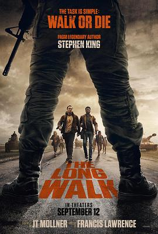

5.3
死亡竞走
The Long Walk
2025
美国
评分 5.3
导演:
弗朗西斯·劳伦斯
演员:
库珀·霍夫曼 / 戴维·荣松 / 加勒特·瓦瑞宁 / 图特·纽奥特 / 查理·普拉默 / 王班 / 乔丹·冈萨雷斯
类型:
恐怖,惊悚,科幻
剧情简介
在一个秩序崩塌、娱乐凌驾人性的未来世界，政府以一场“行走游戏”来挑选英雄，也掩盖恐惧。每年春天，一百名少年被选入“长行”——他们必须不停行走，不能停下，不能退后。每当步伐低于时速四公里，警告声响起；三次警告后，子弹将贯穿他们的身体。最终，只剩一个人能活着走出终点。十七岁的雷蒙德被迫参加这场“国民盛事”。他原以为只是一场“考验体力”的游戏，却在路途中目睹了同伴一个个倒下：有人因饥饿倒地，有人因精神崩溃自言自语，还有人选择与士兵对抗，用最后一步换来尊严。阳光下的公路如同炼狱，孩子们的笑声被直升机的轰鸣淹没，电视直播镜头记录着每一次死亡的细节。导演弗朗西斯·劳伦斯以极度克制的镜头语言和冷峻的节奏还原了斯蒂芬·金笔下的残酷世界：公路尽头没有希望，观众的掌声成为死亡的配乐。每一次枪响都更接近人性的极限。库珀·霍夫曼的表演在沉默中爆发，他的汗水、恐惧与微弱的微笑，将“活下去”演绎成一种绝望的信仰。《死亡竞走》是一场寓言式的噩梦，揭露人类在权力与观赏之间的冷漠。它既是一场步行比赛，也是一面镜子，映照出观众内心深处对暴力的习惯与麻木。当最后一人孤身走入黑暗，问题仍未结束——究竟是谁在行走，谁又在观看？